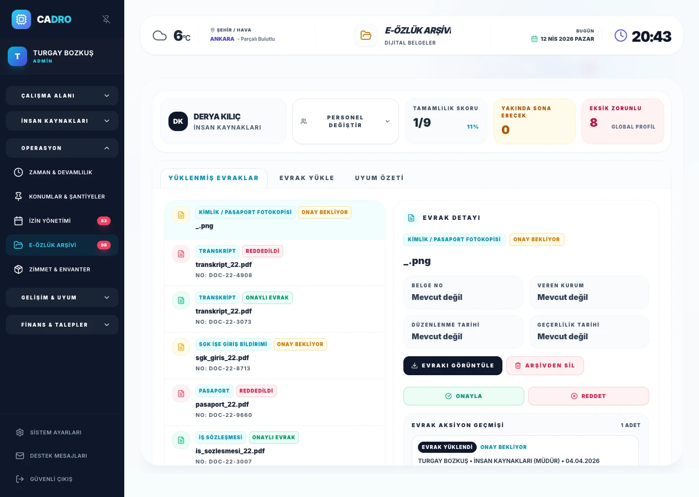

Kategorili Belge Arşivi
Her belge kategori ve türüyle (kimlik, sözleşme, sağlık raporu vb.) kaydedilir. Zorunlu belgeler is_mandatory alanıyla işaretlenir; APPROVED / PENDING / REJECTED durumu anlık görünür.

DİJİTAL ÖZLÜK DOSYASI VE İZİN YÖNETİMİ
Dijital özlük dosyası ile çalışan belgelerini, belge yükleme, eksik evrak takibi ve izin onay akışlarını tek platformda yönetin. CADRO ile İK operasyonları daha görünür, daha kontrollü ve daha ölçülebilir hale gelir.

Belge takibinin dağınık ilerlemesi, eksik evrak riskleri ve izin taleplerinin manuel şekilde yönetilmesi.
Dijital özlük dosyası, belge yükleme, uyum görünümü ve izin onay akışını tek merkezde birleştiren yapı.
Daha güçlü belge görünürlüğü, daha düzenli İK operasyonu ve çalışan deneyiminde daha yalın süreçler.
OZLUK & İZİN MODÜLÜ
Her belge kategori ve türüyle (kimlik, sözleşme, sağlık raporu vb.) kaydedilir. Zorunlu belgeler is_mandatory alanıyla işaretlenir; APPROVED / PENDING / REJECTED durumu anlık görünür.
Her belgenin expiry_date alanı izlenir; süresi dolmak üzere olan belgeler otomatik uyarı tetikler. Zorunlu evrakı eksik personel için compliance listesi anında oluşturulur.
Çalışan talep oluşturur → departman müdürü → HR / ADMIN onayı sırayla tetiklenir. Her adım kayıt altında; talep PENDING / APPROVED / REJECTED / CANCELLED olarak kapanır.
Kıdem yılına göre otomatik hak belirlenir (0–1, 1–5, 5–15, 15+ yıl). Devir hakkı politikaya bağlı max_carry_over_days sınırıyla kontrol edilir; kullanılan / bekleyen / kalan ayrımı anlık görünür.
Yıllık (ANNUAL), sağlık (SICK), mazeret (EXCUSED) ve doğum (MATERNITY) izinleri ayrı bakiyelerde izlenir. Her türün talebi bağımsız onay akışına yönlenir.
Her belge işleminde DocumentActionLog kayıt oluşturur: kim ne yaptı, önceki / yeni durum, zaman damgası. KVKK ve iş müfettişi denetimine hazır.
BELGE YÜKLEME
Belge kategorisi, geçerlilik tarihi ve zorunlu evrak mantığı ile çalışan dosyalarını dağınık klasörlerden kurtarın.

COMPLIANCE GÖRÜNÜMÜ
Belge tamamlama skoru, eksik evrak listesi ve uyum özeti sayesinde İK ekipleri daha proaktif hareket edebilir.

İÇ LİNK YAPISI
İzin, devamsızlık ve günlük operasyon akışını zaman yönetimiyle daha bütüncül ele alın.
Puantaj Modülünü İncele →Çalışan verisi, gelişim görünümü ve performans takibini tek İK yapısı altında bütünleştirin.
Performans Modülünü İncele →Belge güvenliği, veri yönetimi ve sistem yaklaşımını daha detaylı inceleyin.
Güvenlik Sayfasını İncele →MERAK EDİLENLER
Çalışan belgelerini tek merkezde yönetmeye, eksik evrak risklerini azaltmaya ve İK operasyonlarını daha hızlı yürütmeye yardımcı olur.
Evet. CADRO, çalışan belge yönetimi ve izin akışını aynı yapı içinde sunarak operasyonel bütünlük sağlar.
İK ekiplerinin öncelikleri daha net görmesini, belge tamamlama süreçlerini hızlandırmasını ve uyum risklerini daha erken fark etmesini sağlar.
HAZIR MISINIZ?
CADRO ile dijital özlük ve çalışan operasyonlarını tek platformda yönetin.